What is an Average Juggle?
Every February, the Atlanta Juggler’s Association hosts the Atlanta Juggling Festival, and I have been lucky to attend it since 2010. This year I wanted to combine a few of my favorite things: computer science, graph theory, and juggling and at the same time revive my blog from the long-dead state it has been in since late
I promise there will be code and cool math, but first there will be lots of gifs to try and introduce the concepts that motivated this. This will also be a bit long and winding, I’ll touch on Markov chains, some basic combinatorics, a touch of automata, and who knows what else.
To start with, I have to introduce a concept: siteswap. Siteswap is a notation that can represent the heights and patterns with which someone juggles. It does not, however, represent everything about how someone juggles. For example, both of these are referred to as “3” in siteswap.
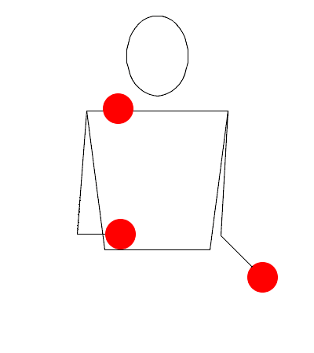 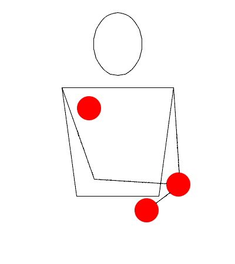
And there are countless other “3s”, 3 clubs, reverse cascade, ping pong, behind the back throws, etc. are all still “3” in siteswap.
What sideswap tells us is the relationship between the heights of various throws. That is, a throw of “N” in siteswap is the number of beats until we need to throw that same prop again, so if I throw a “3” on count 0, then I have counts 1 and 2 free to deal with other props, and then I will need to throw the first prop again on count 3.
So then we can start to see why one might call a 3 ball pattern where every throw is the same a “3”. The first ball gets throw with a 3, then the second with a throw of height 3, then the third ball with a 3 once more then you’re back to the first. This might be more aptly referred to as a “333”, but in siteswap repeated patterns are shortened (this is more useful with longer patters, who wants to refer to somthing as “5050550505”).
Different numbers represent differently throws at different heights or with different numbers of props, a “0” is two empty hands, the way you would juggle 0 props. A “1” represents constantly passing back and forth quickly between hands, the way you would juggle with a single prop, a “2” represents holding a ball in each hand, or the way you would juggle two props, and 3, 4, 5, and so on represent the “cascade” patterns with various numbers of props.
With heights of 0, 1, and 2, the abstraction of “number==throw height” breaks down. Its better easier to conceptualize these lower numbers not as heights, but instead as the beats until you need to deal with those props again. A one is thrown directly across to be handled on the following beat, a 2 is held, allowing one count in the other hand, and then the prop must be thrown again on count 2, and a 0, well, a 0 is a prop that didn’t actually need to be dealt with at all.
As an example, here are the 1, 2, 3, and 4 ball base patterns:
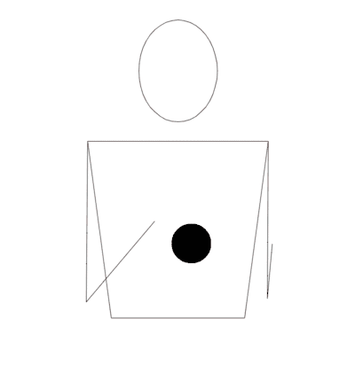 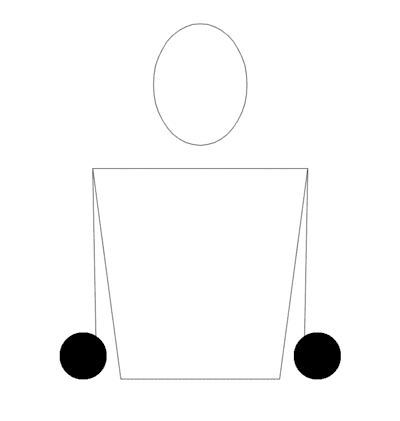 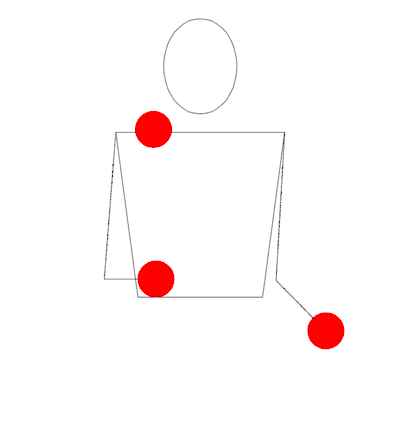 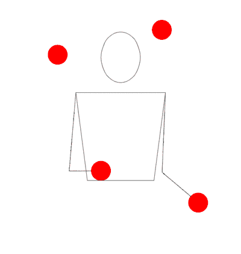
Now we introduce a second, potentially more confusing concept: the idea of juggling state. If I throw a ball at height “3”, then it will come down 3 counts after I throw it, and I will then need to do something else with it. Similarly, if I throw a ball at height “1”, I will need to use it on the next count. If we imagine someone doing a normal 3 ball pattern, they have an incoming ball on every count. However, if we start allowing higher throws, there is space freed up.
As an example, here are two 3 ball patterns, “522” on the left and “531” on the right. In “522”, this extra space is used by holding the balls for an extra count (because remember, a “throw at height 2” is equivalent to just holding the prop), but in “531”, there is an extra step where the two held balls are swapped.
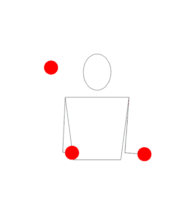 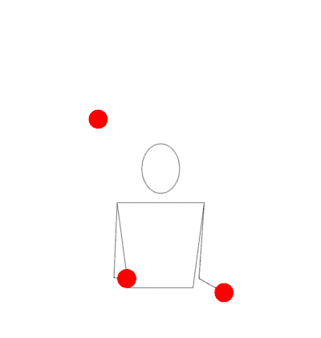
When we allow more throws then balls, we open the door to multiple ways of getting to the same place. That is, both “522” and “531” have a maximum throw height of 5, use 3 balls, and have the same period (they repeat after the same number of throws). There is some similarity. In fact, when you really look closely, you can kind of see that one could switch between “531” and “522” at certain times smoothly. In other words, the juggling pattern “531522” is also a valid pattern:
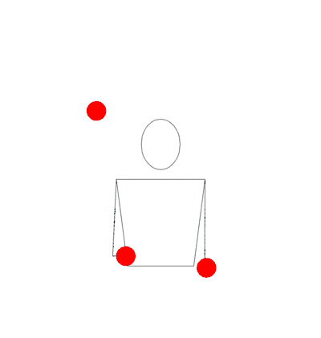
Notice that every time a high (5) throw is done with the right hand, it leads into a “522”, but every time the left hand throws a 5, it begins a “531”.
There’s something interesting going on here. These patterns aren’t solely
individual patterns, but they’re pieces that can be stuck together. Not always
though, “32” isn’t a pattern, even though “2” and “3” are both valid. In fact, a
pattern is only valid if the average of all of the values in its siteswap is a
whole number, and that whole number is the number of balls in the pattern. For
522, 5+2+2=9 and 9/3 = 3, which matches what we can see: “522” is a 3 ball
pattern.
What is actually happening here is that the balls are moving between states. Like I said before, juggling balls have a state, each ball is some number of beats away from being caught. So if you can only throw a “3”, then every throw will be the same, and ever state will be the same, there will always be one ball 1 count from landing, 1 ball 2 counts from landing, and 1 ball 3 (or 0 counts, depending on how you interpret this) counts from landing. There are 3 spaces for balls to be, and 3 balls. Pretty static system.
But if we allow higher throws, we allow the props to be in more locations. With 5 balls, there are 5 spaces for the balls to be at any given moment, so when we use 3 balls, but have 5 spaces, instead of every space being filled, only some of them are (3, in fact). The extra spaces are placed where you can make choices, but your choices are somewhat limited.
So if our original question was “What is the average juggle?”, then the first question we should answer is “What is every juggle?”. Like I said before, if the highest throw is n, and we use b balls, then in any valid state, a ball can be in a location, or not, but there are a maximum of b of them. That sounds a lot like a combination, in the mathematical sense. A state is valid if, from the n possible places for a ball to be, we choose b of them, without repeating any, because two balls in the same place would be strange.
import itertools
max_height = 5
balls = 3
list(itertools.combinations(range(max_height), balls))
And the output is:
[
(0, 1, 2),
(0, 1, 3),
(0, 1, 4),
(0, 2, 3),
(0, 2, 4),
(0, 3, 4),
(1, 2, 3),
(1, 2, 4),
(1, 3, 4),
(2, 3, 4)
]
For reasons that will remain momentarilly mysterious, this is not the best representation of these states, instead of a tuple of values, we would actually prefer something like a bitstring, luckily we can whip up a function to convert from these tuples to a bitstring quite easily:
def to_bitstring(tup, length):
# in this case, length is equivalent to the maxmimum throw height
result = [0] * length
for pos in arr:
result[size - pos - 1] = 1
return tuple(result)
And as we might expect, to_bitstring((0,1,2), 5) returns (0,0,1,1,1). Now
that we have states, we need to figure out how to transition between them. This
is why the bitstring representation was important. We can imagine each position
in the bitstring as the amont of beats until we need to deal with that ball:
| beats away | 4 | 3 | 2 | 1 | 0 |
| ball locations | 0 | 0 | 1 | 1 | 1 |
So if we look one step into the future, then we have (assuming no more balls are thrown)
| beats away | 4 | 3 | 2 | 1 | 0 |
| ball locations | 0 | 0 | 0 | 1 | 1 |
What this means is that to transition a time step into the future, we can
right-shift our current position. Then, our next throw can be to put the ball at
any of the availible timesteps, in this case 2, 3, or 4. But to put a ball 2
timesteps away at 1 timestep in the future, we would need to throw a 3. This
means that from the first state (0,0,1,1,1), we can throw a 3, 4, or 5 without
having any problems.
So if we want to codify that kind of transition, we might put this into code:
def get_next_state(current, throw):
if throw > 0:
return (current >> 1) | 2**(throw - 1)
else:
return current >> 1
There are two important things to note here:
currenthere is an integer instead of an array, so we are bitshifting the integer itself. We could rotate a tuple, but rightshift looks much cleaner in code than some kind of special array rotate function.- A 0 throw is a bit of a special case, since instead of adding a new ball, you don’t add anything new.
- This doesn’t check for anything being invalid
So we can move between states, but we want something a bit stronger: to be able to find all valid future states from our current state. This is a bit more complex:
def get_valid_tosses(position, height):
balls = sum(state)
if len(state) > height:
raise ValueError("You can't throw that high")
elif len(state) < height:
state = [0]*(height - len(state)) + state # extend the length so that
# length == height
state = [0] + state[:-1]
if sum(state) == balls:
return [0]
valid_tosses = [len(state) - 1 for i, pos in enumerate(state) if not pos]
return valid_tosses
This bit of code takes in a current state, like (0, 0, 1, 1, 1), and a max
throw height, like 5, and returns a list of valid tosses that can be made from
that state, so for example
get_valid_tosses((0,0,1,1,1), 5) == [3,4,5]
get_valid_tosses((1,0,1,0,1), 5) == [1,3,5]
get_valid_tosses((1,1,1,0,0), 5) == [0]
But we want all the valid tosses for all of the starting states, and to get those we’ll just loop through all of our initial positions, convert them to bitstrings, and get a list of valid tosses for each. We also want a nice way of referring to a throw from a state to another state, so we need some way of representing a transition between states.
import collections
Transition = collections.namedtuple('Transition', ['height', 'next'])
def generate_transition_graph(balls=3, max_height=5):
possible_positions = list(itertools.combinations(range(max_height), balls))
transitions = {to_bitstring(pos, max_height):
get_valid_tosses(to_bitstring(pos, max_height), max_height) for pos in
possible_positions}
for pos in transitions:
transition[pos] = [Transition(x, next_state(pos, x)) for x in
transitions[pos]]
return transitions
There’s a lot going on here, but the function does three things: first gets all possible states, then for each position, find all the valid throws from that position, and finally take those lists of valid throws and replace them with “Transition” objects, which track both the throw height and the next state. If we run this, we get an output like
{7: [Transition(height=5, next=19),
Transition(height=4, next=11),
Transition(height=3, next=7)],
11: [Transition(height=5, next=21),
Transition(height=4, next=13),
Transition(height=2, next=7)],
13: [Transition(height=5, next=22),
Transition(height=4, next=14),
Transition(height=1, next=7)],
14: [Transition(height=0, next=7)],
19: [Transition(height=5, next=25),
Transition(height=3, next=13),
Transition(height=2, next=11)],
21: [Transition(height=5, next=26),
Transition(height=3, next=14),
Transition(height=1, next=11)],
22: [Transition(height=0, next=11)],
25: [Transition(height=5, next=28),
Transition(height=2, next=14),
Transition(height=1, next=13)],
26: [Transition(height=0, next=13)],
28: [Transition(height=0, next=14)]}
For brevity, I’ve replaced the bitstrings with their actual values, so
(0,0,1,1,1) is represented by 7, and (1,0,1,0,1) is represented by 21. Its
just a little bit easier to grok this way. And with a bit of javascript, we can
even vizualize this:
In this vizualization, each node represents a juggling “state” and each arrow represents a valid throw. Throws are color coded, blue for 0, orange for 1, green for 2, red for 3, purple for 4, and brown for 5.
Notice that if we start in state 00111 and follow the brown arrow, we get to state 10011, where if we follow the red arrow we get to state 01101, and from there we can follow the orange arrow back to state 00111. Brown, red, orange forms a loop, and corresponds to the pattern “531”. Similarly the throw 3 from state 00111 forms the one and only self-loop on the graph.
So these valid patterns we’ve found form contained loops on the graph. There are a couple of nice results from this:
- You can apparently write a deterministic finite automata to accept valid juggling patterns for some height h and number of props b, and so detect them with a regular expression. This makes me wonder if there is any better way of describing these patterns than “juggling sequences” or “siteswaps”, in a mathemtical sense.
- If we want to generate all patterns of some length, we can find all cycles of length n on the graph, trivially by doing a form of graph search, but apparently you can do better.
- We can take the graph, convert it to an adjacency matrix, and calculate a stationary distribution on that matrix to see which positions on the matrix are the most common, and use that to calculate the most common throws.
- We can just run around on the graph for a long time and see which cycles appear often.
I like markov chains, so lets do the last one.
def find_patterns(transitions, max_length=5, test_length=1000):
# start randomly
first = transition_graph.keys().__iter__().__next__()
throws = create_juggling_series(transition_graph, test_length, first)
# initialize recent throws to be very very long ago
most_recent_positions = {x: -(max_length + 1) for x in transition_graph}
patterns = collections.Counter()
for i, throw in enumerate(throws):
if i - max_length <= most_recent_positions[throw.next]:
pattern = throws[most_recent_positions[throw.next]+1:i+1]
heights = [t.height for t in pattern]
heights = heights + heights
min_so_far = tuple(heights[0:len(pattern)])
for j in range(len(pattern)):
if tuple(heights[j:j+len(pattern)]) < min_so_far:
min_so_far = tuple(heights[j:j+len(pattern)])
patterns[min_so_far] += 1
most_recent_positions[throw.next] = i
return patterns
Its worth noting that this method is also the best, in my opinion, at finding the answer to our question: What is an average juggle? A DFA won’t answer this. Calculating all patterns won’t tell us this, and stationary distributions just tell us which positions are most common, and further analysis can tell us which throws are the most likely. But a throw, or an abstract ‘juggling state’ or whatnot isn’t a juggle. A juggle is a pattern.
And luckily, letting something run around the graph and detect cycles that it passes is a really effective way of finding out how common different patterns are.
Running for 10000 steps, we get
[((3,), 988),
((2, 4), 564),
((0, 4, 5), 444),
((1, 5), 310),
((0, 4, 4, 4), 266),
((0, 5, 3, 4), 227),
((0, 5, 5, 2), 202),
((1, 4, 4), 199),
((0, 4, 5, 3), 195),
((1, 5, 3), 194)
...
]
That is, the pattern 3 appears 988 times, the pattern 2,4 appears 564 times, and so on. Note that this isn’t “a 3 was thrown 988 times”, but it only counts a 3 that was thrown from and to the correct state on the graph.
Some of the patterns are decidedly less common, like 2234235 and 1153155,
which both occur only once in the 10000 throws. If we run the same kind of test
on other numbers of balls, an interesting pattern emerges:
find_patterns(generate_transition_graph(balls=5, max_height=7), test_length=10000).most_common(10)
[((5,), 868),
((4, 6), 476),
((3, 7), 279),
((3, 6, 6), 222),
((4, 4, 7), 188),
((3, 7, 5), 146),
((2, 6, 7), 123),
((2, 6, 7, 5), 85),
((2, 6, 6, 6), 82),
((3, 7, 4, 6), 81)]
find_patterns(generate_transition_graph(balls=7, max_height=9), max_length=7, test_length=10000).most_common(10)
[((7,), 7731),
((6, 8), 4327),
((5, 9), 2295),
((5, 8, 8), 1872),
((6, 6, 9), 1723),
((5, 9, 7), 1617),
((4, 8, 9), 1068),
((4, 8, 8, 8), 760),
((5, 9, 6, 8), 758),
((3, 9, 9), 631)]
The most common patterns are the base pattern, where the height is equal to the number of props being juggled, followed by patterns where the juggler alternates one higher and one lower. Then things begin to change, but it seems that in general, our average juggling patterns are variants of these two:
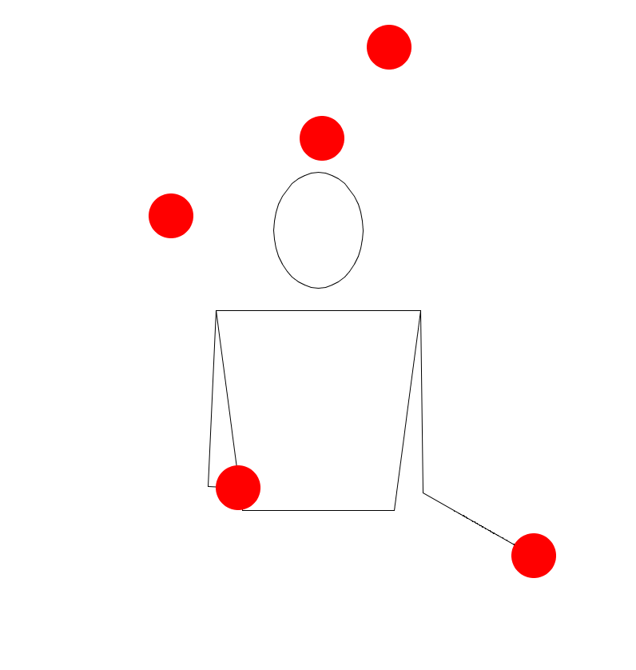 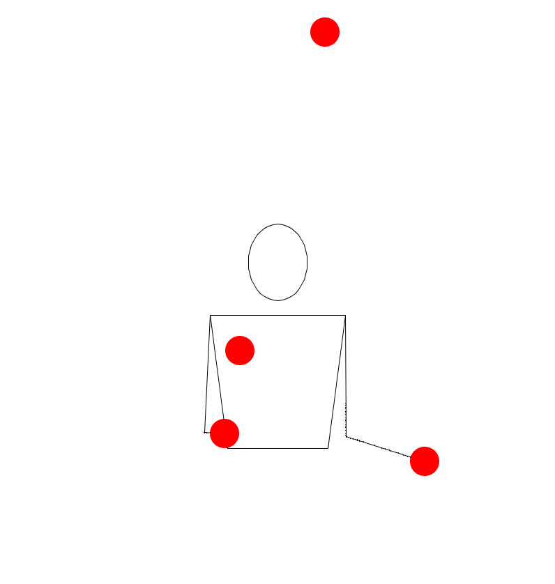
That feels a bit boring though, and while writing this, I came across a really great tool: siteswapbot.com, which allows you to get gifs of siteswaps right in the browser, including extended siteswap notation like multiplex and synchronous siteswaps, which are things like (4,2x)(2x,4) and [34]5[33]. And those in general allow you to model simultaneous throws from one or both hands.
Big shoutouts to Explained Visually, for a great set of vizualizations on markov chains that I used to build mine, and a huge shoutout to JugglingLab, which was a huge help in creating all these fancy gifs.